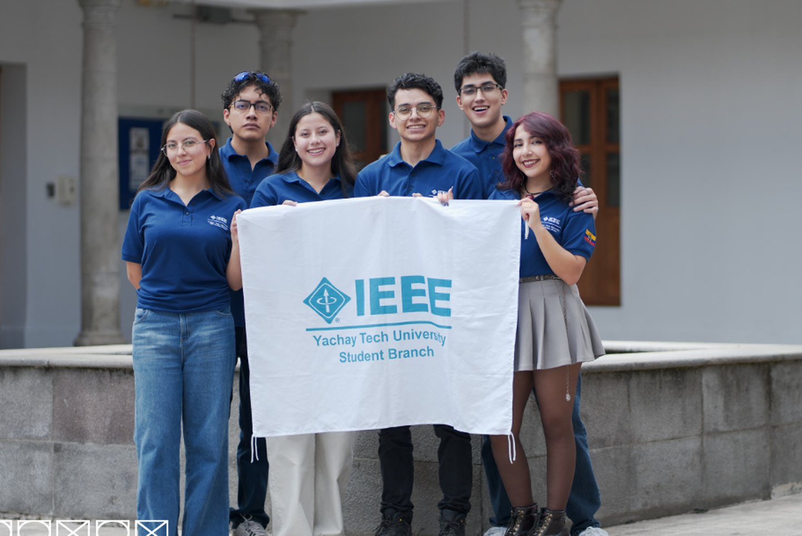

Qué es la Rama
Un grupo constituido oficialmente ante IEEE a nivel mundial, formado por estudiantes de distintos programas de pregrado y posgrado de la Universidad Yachay Tech.
La Rama Estudiantil IEEE de Yachay Tech nace con tres objetivos que no han cambiado: la permanente actualización profesional, la investigación, y el desarrollo e implementación de nuevas tecnologías. Todo lo demás —los capítulos, los congresos, los talleres, las noches largas antes de una competencia— existe para sostener esas tres cosas.
Somos la Rama General: el núcleo que conecta a todos los capítulos y sociedades que funcionan dentro de la universidad. Cuando el capítulo de Computer Society organiza una formación técnica, cuando EMBS acerca la ingeniería a la salud, cuando Women in Engineering entra a una unidad educativa de Urcuquí a hablar de STEM, la Rama es la estructura que lo hace posible y lo mantiene en pie de un año al siguiente.
Pertenecer a IEEE desde Urcuquí significa tener acceso a la mayor organización técnica profesional del mundo sin salir de Imbabura: a sus sociedades técnicas, a sus grupos de estudio e investigación, a intercambios de estudiantes y docentes, y a una red de más de 460.000 profesionales en más de 190 países. La distancia deja de ser un argumento.
Y no hace falta estudiar ingeniería eléctrica para entrar. IEEE acepta a estudiantes de computación, física, matemática aplicada, biología, nanotecnología y disciplinas afines — que es prácticamente el mapa de carreras de Yachay Tech. Dentro de la Rama funcionan doce capítulos técnicos y dos grupos de afinidad, cada uno con su propia directiva y su propia agenda.
IEEE en el mundo
La mayor organización técnica profesional del mundo. Nuestra rama es uno de sus nodos.
Directiva 2026
Seis personas listas para guiar proyectos, fortalecer la comunidad y abrir nuevas oportunidades para estudiantes apasionados por la ingeniería y la tecnología.

Qué gana quien entra
Becas, ayudas de viaje, competencias mundiales, formación y una red de más de 460.000 profesionales. Casi todo lo que sigue pide membresía IEEE: no es un requisito nuestro, es lo que abre la puerta a los programas de la organización. Cuesta menos de lo que parece y en Únete está el cómo.
Eso cuesta la membresía estudiantil de IEEE. Si te inscribes a partir de marzo pagas la mitad —unos 14 USD— porque el año ya va empezado, y cada sociedad técnica que añadas suma entre 1 y 13 USD al año. Women in Engineering es gratuita.
Un detalle que conviene saber: todas las membresías IEEE vencen el 31 de diciembre. Si entras entre agosto y diciembre, la tuya puede extenderse hasta el 31 de diciembre del año siguiente — o sea que ahora mismo rinde casi el doble.
Cifras de la guía de membresía de la Rama; varían un poco según la región. La tarifa vigente, en ieee.org.
Herramientas que ya puedes usar
Oportunidades son cosas a las que se postula. Esto es lo contrario: seis recursos de IEEE que se abren hoy, sin esperar convocatoria, y que a media carrera se agradecen.
La mayoría de estos recursos son para miembros, y lo que incluye cada uno depende de tu tipo de membresía y de lo que tenga contratado la universidad. Spectrum se lee sin cuenta; el resto pide sesión. El detalle, en beneficios de membresía IEEE, y el cómo hacerse miembro en Únete.
El archivo
Las piezas tal como salieron publicadas. Haz clic para ampliar.
Nuestra trayectoria
Lo que hemos construido, en orden.
El apartado de memes de la Rama: chistes sobre IEEE, sobre la carrera y sobre lo que se vive en Yachay Tech. Es el otro archivo, el que circula por el grupo cuando nadie está tomando acta.
Próximamente
Únete a la Rama
Si estudias en Yachay Tech y te interesa la ingeniería, la investigación o simplemente construir cosas con otra gente: hay lugar. Escríbenos y te contamos cómo inscribirte.